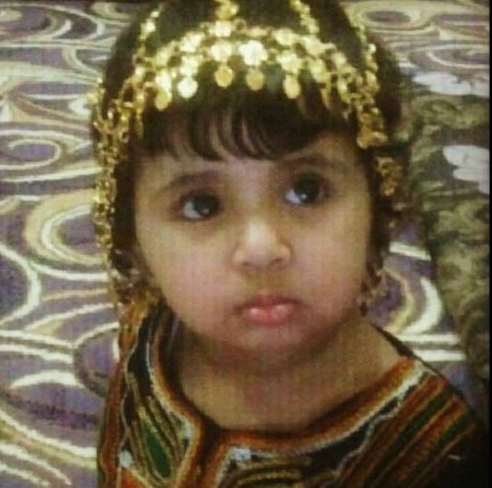
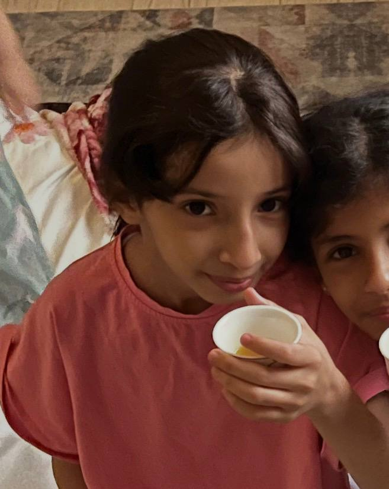
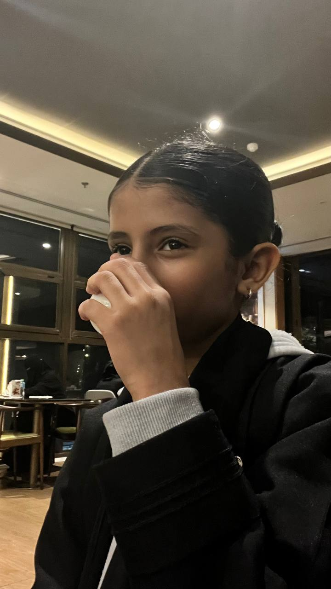
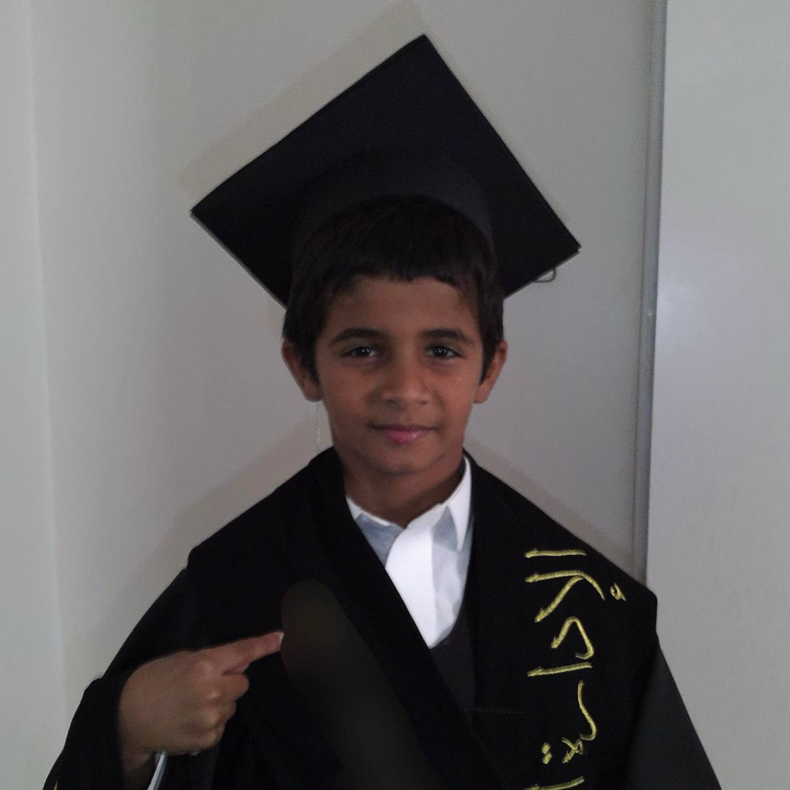
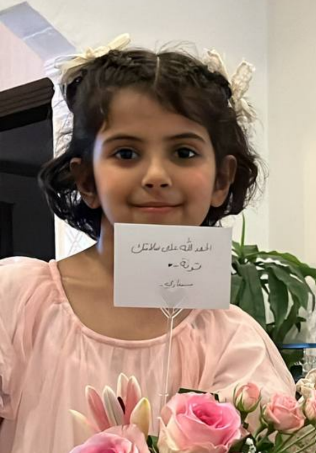
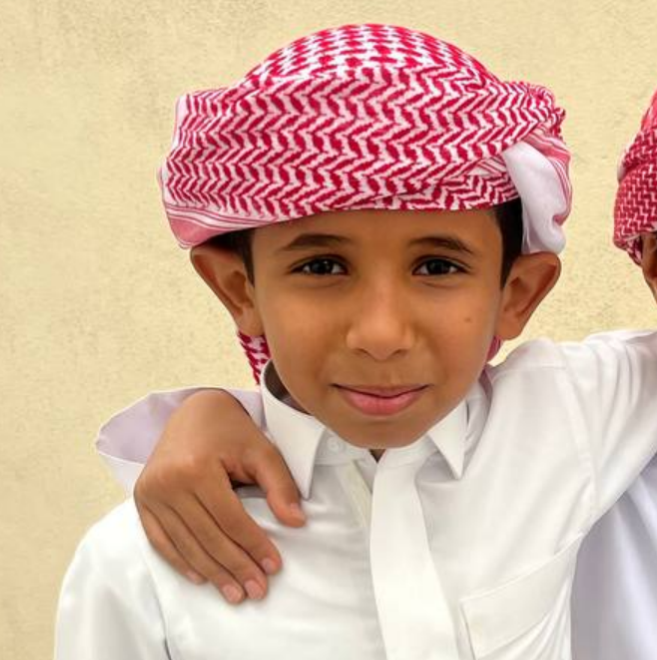
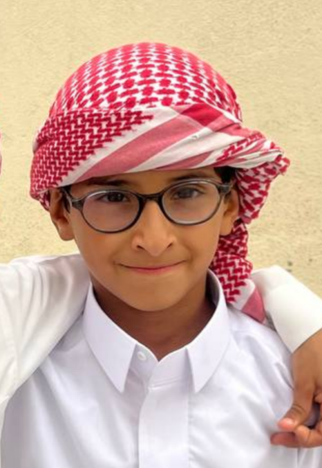
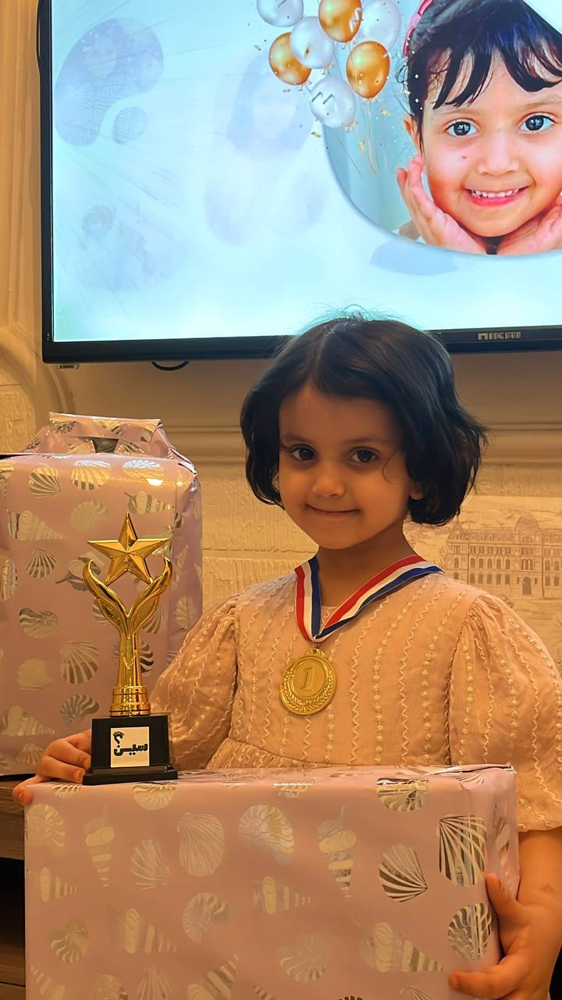

فرسان سين الأحفاد ✨
كل حفيد شارك معنا هو بطل تميز بروح وعطاء استثنائي، وفخورين فيهم جميعاً!

لينا بنت جمل
🎓 الحكمة والهدوء العالي
كبيرة الحارة وعاقلة الحفظ؛ تسمع بهدوء وتركيز يخليك تشك إنها موجهة المبادرة مو مشاركة، فخرنا وقدوتنا!

الجوهرة بنت بندر
💡 سرعة البديهة والتركيز
جوهرة المسابقة اللي جمعت بين الدفارة والأناقة، حضورها يضيف هيبة، وحفظها يثبت إنها قد المسؤولية وزيادة.

دانة بنت جمل
🌟 النجم الواعد والشغف
صاحبة الحضور الجميل والطاقة الإيجابية، انتقلت للمتوسط بكل ثقة، وحفظها دايمًا جاهز ومستعدة لأي تحدي وعلمي وثقافي!

علي بن جمل
🛡️ الحارس الأمين والالتزام
على أعتاب التخرج من الابتدائي وهيبته سابقتة؛ يدخل التسميع بكل جدية، لكن ابتسامته بعد الإنجاز تحلي المكان وتفرحنا.

ضي بنت سعود
⚡ شعلة الحماس والذكاء
اسم على مسمى، نورت المسابقة بحماسها اللي ما ينطفي، سريعة بالحفظ، وما يمديك تفتح المصحف إلا وهي مخلصة!

فهيد بن جمل
🚀 القوة والشجاعة في الأداء
بطل المهام الصعبة! عنده تكنيك خاص في الحفظ السريع، ويجي للتسميع كأنه داخل تحدي حسم، ولازم يطلع هو الفائز الكاسح.

فهد بن بندر
🎯 التركيز والهدوء الذكي
يهديك بنظرته الهادية، وتظن إنه ساهي، لكنه في الحقيقة قاعد يراجع السورة في مخه ويستعد للصدمة الإيجابية أثناء التسميع المتقن!

شادن بنت سعود
🎈 الكاتشب اللطيف للمسابقة
فراشة أولى ابتدائي اللي تجيب السعادة معاها؛ تحفظ الكلمات وتسمعها بنبرة طفولية تخلي لجنة التحكيم تبي تعطيها الجائزة بدون ما تكمل السورة!

أحمد بن بندر
🧸 الكاريزما الطفولية القاتلة
أصغر رجال المسابقة وأقواهم كاريزما؛ لو نسي آية يرقعها بابتسامة سحرية تخلي الكل ينسى وش كان يسمع أصلاً ويمدحه!